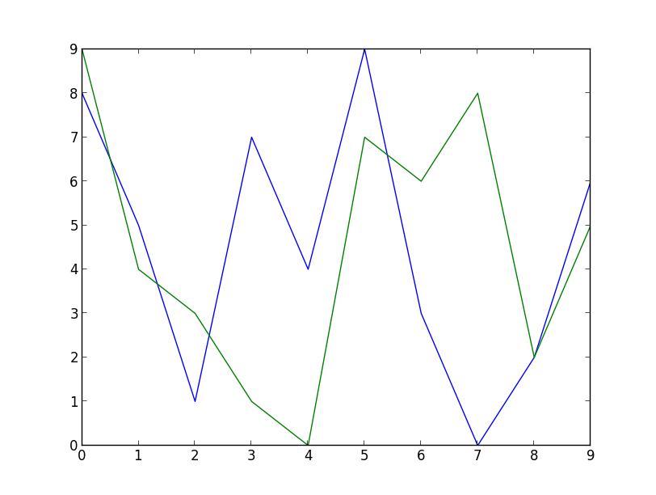
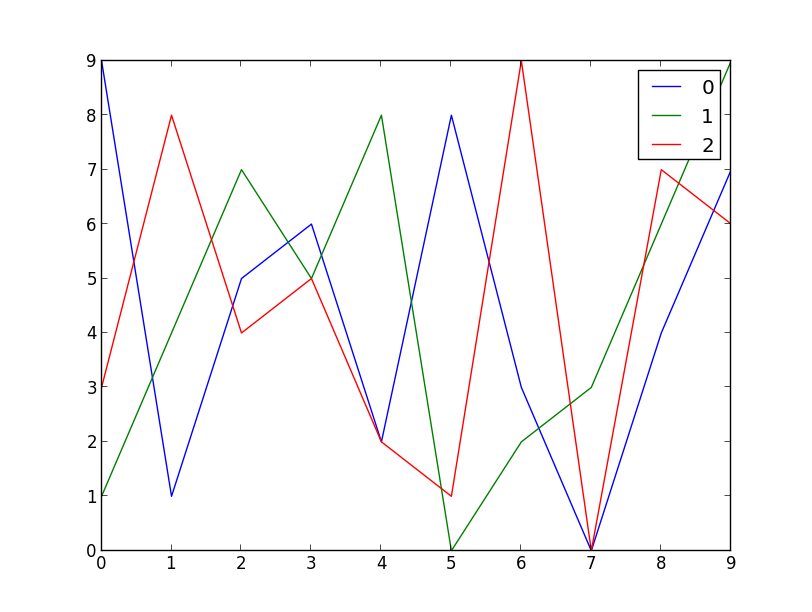

Have a look at this code:
from matplotlib import pyplot
import random
x_axis = range(10)
pyplot.plot(x_axis, random.sample(range(10), 10))
pyplot.plot(x_axis, random.sample(range(10), 10))
pyplot.show()
With matplolib installed, running the code above should resulted in the following image:
You will notice that there's 2 graphs drawn over the same axis, nothing special. What I really loved about matplotlib is that I did not need to specify what colors to use for any of the graphs (as I did previously). The colors were chosen automatically. It was helpful especially in my case because I needed a way to specify an arbitrary number of graphs. Without this magical feature, the code would be a lot uglier.
Here goes:
from matplotlib import pyplot
import argparse
import random
parser = argparse.ArgumentParser()
parser.add_argument('number_of_graphs', type=int)
args = parser.parse_args()
x_axis = range(10)
for n in range(args.number_of_graphs):
pyplot.plot(x_axis, random.sample(range(10), 10), label=str(n))
pyplot.legend()
pyplot.show()
If I provide 3 as command line argument, I get this:
This feature left me pleasantly surprised.
Comments !